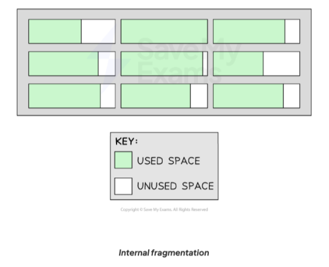

Software & Operating Systems – Notes
System Software vs Application Software
System software enables the computer to operate, controls hardware and provides a platform for applications (for example, the operating system, utilities and device drivers).
Application software consists of programs that perform tasks for the user, such as writing documents, browsing the web or editing images.
Types of Application Software
| Type | Purpose | Examples |
|---|---|---|
| Word Processor | Create and edit text documents. | Word, Google Docs |
| Spreadsheet | Organise, analyse and process numerical data. | Excel, Google Sheets |
| Database | Store, query and manage data. | Access, MySQL |
| Presentation Software | Create visual / multimedia presentations. | PowerPoint, Keynote |
| Graphics / Image Editor | Manipulate and create graphics. | Photoshop, GIMP |
| Web Browser | Access and view web pages. | Chrome, Firefox, Edge |
| Video Editor | Edit and create video content. | Premiere Pro, Final Cut Pro |
| IDE | Develop, test and debug code. | VS Code, IntelliJ IDEA |
| Virtualisation Software | Create and run virtual machines. | VMware, VirtualBox |
Utility Software
Utility software helps analyse, configure, optimise and maintain a computer system. It supports the operating system rather than directly performing end-user tasks.
| Utility | Purpose | Example Use |
|---|---|---|
| Disk Defragmenter | Rearranges files on a hard drive into contiguous blocks. | Speeds up file access on HDDs. |
| File Management | Organise, search, rename and relocate files/folders. | Windows Explorer, macOS Finder. |
| Device Driver | Interface between OS and hardware device. | Printer, graphics card, network card. |
| System Cleanup | Remove temporary files and junk to free up space. | Disk Cleanup, CCleaner. |
| Security / Antivirus | Protects against malware and other threats. | Windows Defender, Norton. |
| Backup | Creates copies of important files. | Nightly backup of coursework to cloud / drive. |
| Compression | Reduces file sizes for storage or transfer. | Compress large projects to email. |
Open Source vs Closed Source Software
Think of software like a recipe.
- Open Source Software (OSS) – the “shared recipe”. Source code can be viewed, modified and redistributed. Good for collaboration, transparency and customisation.
- Closed Source Software (CSS) – the “secret recipe”. Source code is hidden and proprietary. Usually sold under licence with professional support.
| Type | Benefits to User | Drawbacks to User |
|---|---|---|
| Open source | Often free, customisable, transparent. | May be less polished; compatibility issues; may contain bugs. |
| Closed source | Polished products; professional support; consistency. | Licence costs; less customisable; must trust the vendor. |
Purposes & Types of Operating Systems
Operating system – a set of programs that manage hardware and provide a platform for application software.

Main purposes include:
- Controlling hardware / resource management.
- Providing a platform for applications and file storage.
- Providing a user interface.
- Handling communication with other systems (protocols).
- Translating code (e.g. via compilers / interpreters).
- Providing utilities / housekeeping programs.
Types of OS:
- Single-user – one user at a time.
- Multitasking – apparently runs several programs at once by sharing processor time.
- Multi-user – many users share one powerful computer via terminals.
- Distributed – several computers work together on one job.
- Embedded – dedicated, read-only, built into devices.
- Real-time – guarantees responses within a fixed maximum time; used in time-critical systems.
Interfaces
- GUI – windows, icons, menus; pointer used to select; intuitive for most users.
- Form-based – user completes fields; common in data entry systems; reduces errors.
- Menu-based – user chooses from limited options; good for kiosks / tourist info.
- Natural Language Interface (NLI) – user types or speaks in everyday language; used in virtual assistants and expert systems.
Memory Management, Paging, Segmentation & Virtual Memory
| Virtual Memory | Segmentation and Paging |
|---|---|
Why is virtual memory needed?
Describe how virtual memory is used
Describe the problem of disk thrashing
|
To enable memory to be shared, segmentation or paging is used when managing memory. State two ways in which segmentation and paging are similar.
State one difference between segmentation and paging. (1)
Explain one problem that may occur when using paging and segmentation.
|
Memory management allocates and deallocates RAM so multiple programs can run safely and efficiently.
- Paging – splits memory into equal-sized pages (physical divisions). Processes are divided into pages that can be stored non-contiguously.
- Segmentation – splits memory into variable-sized segments (logical divisions) such as code, data and stack.
- Virtual memory – uses an area of secondary storage as an extension of RAM. Pages not currently needed are swapped out.
Disk thrashing – when the computer spends more time swapping pages between RAM and disk than doing useful processing.
| Memory Management Technique | Description | Example | Benefits | Drawbacks |
|---|---|---|---|---|
| Paging |
Divides memory into fixed-sized blocks called pages.
Pages are physical divisions. |
A process needing 200KB of memory is divided into four 64KB pages, leaving 8KB unused in the last page. | When an application is launched, data is moved from the hard disk into pages for faster access. |
This can lead to internal fragmentation.
Pages are fixed size, so unused space may exist within a page
if the process does not fill it completely.
|
| Segmentation |
Divides memory into variable-sized segments based on
logical parts of a process and complete sections of programs.
Segments are logical divisions. |
In a video editing application, different segments may be created for video data, audio data, effects, and UI elements. | Segmentation is space-efficient as it only allocates the amount of memory an application needs. |
This can result in external fragmentation. Over time, memory becomes fragmented as segments of different sizes are allocated and removed, leaving unusable gaps.  |

BIOS
BIOS – Basic Input/Output System firmware stored in ROM on the motherboard. Performs POST (Power-On Self-Test) then loads the OS (bootstraps).
- BIOS refers to the Basic Input/Output System of a computer
- BIOS is a piece of firmware stored on a small memory chip on the motherboard
- On system start, the BIOS is the first software to run
- It performs a POST (Power-On Self-Test), a diagnostic testing sequence that ensures all the hardware components are working properly
- If the BIOS encounters any errors during this test, it will either halt the boot process or issue an error message
- If the POST succeeds, the BIOS will run the Bootstrap loading sequence, which is the program responsible for starting the operating system
Interrupt handling
Interrupt – a signal to the CPU that a device or process needs attention. Causes the CPU to pause its current task and run an Interrupt Service Routine (ISR).
START REGISTERS PRIORITY STACK ISR FLAG
- Interrupt checked for at start/end of each fetch-execute cycle
- If the interrupt is of a lower or equal priority to the current process, then the current process continues
- If interrupt raised, contents of registers are copied to the stack
- Flags are set to determine if interrupts are enabled or disabled
- Program Counter is changed to point to the Interrupt Service Routine (ISR) — the ISR runs
- After interrupt completion, previous register values are restored from the stack
- Flag is reset
- If a higher priority interrupt is received while servicing an interrupt…
- …this is added to the stack and the new interrupt is dealt with
The ISR (Interrupt Service Routine) is software — it is the function/code that runs when an interrupt occurs. Loading the ISR means starting the correct piece of code to handle the interrupt.
Example ISRs
- Timer interrupt – Every 1 ms or 1 s, the timer triggers and the ISR toggles an LED or updates a clock
- Keyboard interrupt – A key is pressed, the keyboard hardware signals the CPU, and the ISR reads the key
- Network packet received – A new packet arrives at the Ethernet port and the ISR quickly moves it into a buffer
Scheduling algorithms
The purpose of scheduling is to:
- Make efficient use of processor time
- Make efficient use of resources
- Maximise the number of users
- Ensure that there is no apparent delay for users
- Maximise throughput of the CPU
Why scheduling is used
- Maximise number of users
- …with no apparent delay
- Maximise number of jobs processed
- …as quickly as possible
- Obtain efficient use of processor time / resources
- …dependent upon priorities
- …to ensure all jobs obtain processor time / long jobs do not monopolise the processor
Explain why operating systems use scheduling
- Ensure all tasks are processed
- …by changing priorities where necessary
- Process as many jobs as possible
- …in the least possible time
- Maximise number of interactive users
- …receiving fast response times
Round robin scheduling is one method that may be used by a multi-user operating system. Describe round robin scheduling. (3)
- Each user is allocated a time slice
- When the time slice is up, the system moves to the next user
- If the next user needs the processor, they are given a time slice
- Repeat until all users are serviced
- Users may have different priorities
- Time slices are very small (fractions of a second)
- No apparent delay for any user
| Algorithm | Description | Benefits | Drawbacks |
|---|---|---|---|
| Round Robin | Each job gets a fixed time slice. Jobs cycle until completed. |
|
|
| First Come, First Served | Jobs are processed in the order they arrive. |
|
|
| Multi-Level Feedback Queues | Jobs are placed in different priority queues; jobs can move between queues based on behaviour. |
|
|
| Shortest Job First (SJF) | Executes jobs with the shortest total time first. |
|
|
| Shortest Time Remaining | Preemptive version of SJF; always runs the job with the least time left. |
|
|
Virtual Machines
- Virtual machines (VMs) are entire operating systems running inside another operating system
| Benefits | Drawbacks |
|---|---|
|
|
Device Drivers
-
A device driver is a piece of software that enables communication
between an operating system and specific hardware devices such as:
- Printers
- Graphics cards
- Network cards
- Device drivers allow the operating system to control and interact with those devices
- Because many external devices have embedded system software, a driver bridges the gap between a major operating system and a small hardware operating system
- Device drivers make it possible to perform specific operations on the hardware, e.g. a printer driver enables the operating system to send print commands and manage print jobs
- Most hardware manufacturers write their own device driver software, meaning a single operating system may have several printer drivers installed